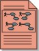

Artifacts >
Artifacts >
 Test Artifact Set >
Test Artifact Set >
 {More Test Artifacts} >
Test Definition >
Workload Analysis Model
{More Test Artifacts} >
Test Definition >
Workload Analysis Model
Artifacts >
Test Artifact Set >
{More Test Artifacts} >
Test Definition >
Workload Analysis Model
Artifact:
| ||||||||||||||||||||||||||||||||||
 Workload Analysis Model |
A model that identifies one or more workload profiles that are deemed to accurately define a system state of interest in which evaluation of the software and/ or it's operating environment can be undertaken. The workload profiles represent candidate conditions to be simulated against the Target Test Items under one or more Test Environment Configurations. |
| UML Representation: | There is no UML representation for this artifact. |
| Role: | Test Analyst |
| Optionality/ Occurrence: | One or more artifacts. Mainly relevant when system load, system performance or system stress testing is to be conducted. |
| Enclosed in: | Optionally, some aspects of the Workload Analysis Model can be encapsulated within the Iteration Test Plan |
| Templates: | |
| Examples: | |
| Reports: | |
| More Information: | |
| Input to Activities: | Output from Activities: |
The Workload Analysis Model attempts to accurately define the loading conditions under which the Target Test Items must operate within their Target Configuration Environment. The main objective is to define a realistic representative workload that allows performance risks to be accurately assessed. Typically determined by analyzing anticipated or existing actor characteristics, end-user's business statistics (use cases), etc.
1. Introduction
Identifies the purpose, background, and objectives of the performance testing within this project.
2. System Attributes and Variables
Identifies the attributes and variables of the system that uniquely identify the workload for the system being modeled.
4. Actor Definitions
Identifies classes of external clients whose use-case sceanrios will need to be modeled to simulate / emulate loads on the system-under-test. Additionally this section identifies the proportion to which any actor comprises the load for a performance test.
7. Actor Attributes
Identifies the attributes and variables of each actor that uniquely identify the different characteristics of the external clients of the system. For each actor, identifies information such as human or non-human, data-feed rate, think time, transaction style, transaction complexity and behaviour patterns characterizing the variability in end-user interaction with the system.
6. Actor Work Profile
Identifies the specific use-case scenarios executed by an actor and the percentage of time or proportion of effort spent by the actor executing the use-case scenarios to accomplish their total business responsibilities.
3. Work Load Profile
For a given profile, identifies the number of external clients being simulated / emulated during the test, including the number, type and distribution of the transactions. A profile may be defined in terms of "peak load", "average load" and so on.
5. Measurements and Criteria
Identifies the measurement and criteria to be used to evaluate successful achievement of the identified performance objectives. Measurements typically include response time limits or throughput capacity.
8. Remote Terminal Emulation Requirements
Identifies the requirements and constraints necessary to be addressed in creating a Test Environment Configuration that is acceptable for implementing and executing the performance testing.
There are no UML representations for these properties.
|
Property Name |
Brief Description |
| Name | An unique name used to identify this Workload Analysis Model. |
| Description | A short description of the contents of the Workload Analysis Model, typically giving some high-level indication of complexity and scope. |
| Purpose | An explanation of what this Workload Analysis Model represents and why it is important. |
| Dependent Test and Evaluation Items | Some form of traceability or dependency mapping to specific elements such as individual requirements that need to be referenced. |
The Workload Analysis Model should be initially outlined as early as possible, preferably in the Inception phase, with ongoing refinement and detailed definition as needed during the Elaboration phase.
While the Workload Analysis Model may be refined or revised during each Iteration throughout the remainder of the lifecycle, it's good practice to conduct as much of the testing as possible that relates to this artifact in the Elaboration phase. While some system load and performance testing work may continue throughout the project, it is likely any significant defects or required changes identified as a result of these tests will not be practical or affordable if the results are delivered much later than early in the Construction phase.
The Test Analyst role is primarily responsible for this artifact. The responsibilities are split into two main areas of concern:
The primary set of responsibilities covers the following design and implementation issues:
The secondary set of responsibilities covers the following management and signoff issues:
The Workload Analysis Model (contents and format) may require modification
to meet the needs of internal or external standards, guidelines, etc.
|
Rational Unified
Process
|